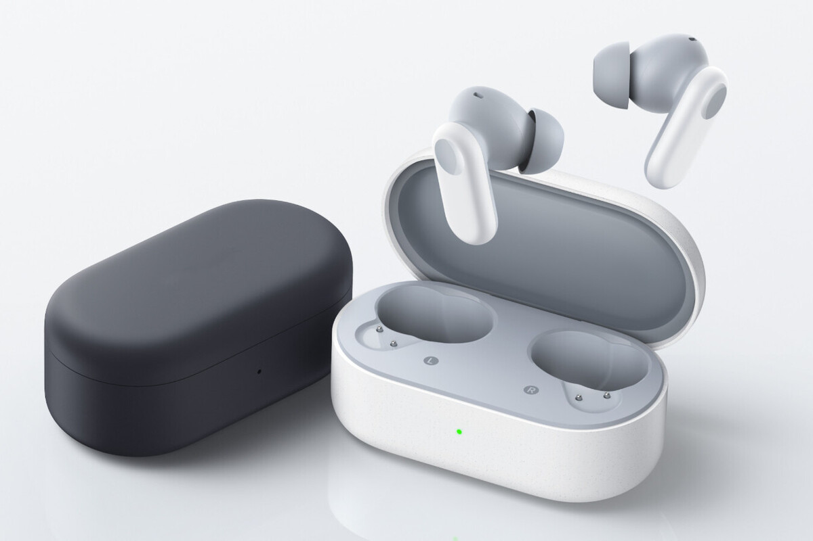

Auriculares Bluetooth con cancelación de ruido
Tener poco presupuesto para unos auriculares Bluetooth no significa que debamos prescindir de algunas características. Y, aunque Xiaomi y Samsung tienen modelos muy económicos, en esta ocasión el mejor ejemplo de ello son los OPPO Enco Buds2 Pro, sobre todo ahora que MediaMarkt los tiene por sólo 19,90 euros.
Estos auriculares Bluetooth de OPPO son económicos, ya que su precio recomendado actualmente es de 49,99 euros. Aunque los hemos podido encontrar últimamente algo más baratos, ahora es cuando los tenemos con una de las mejores rebajas hasta la fecha, ya que aprovechando el descuento del 60% de MediaMarkt, finalmente se quedan por 19,90 euros.
Los OPPO Enco Buds2 Pro son interesantes por varias razones. La primera, la que salta a la vista, es por su diseño elegante y por su formato compacto; su estuche es plano con bordes redondeados. También destaca que cuentan con cancelación activa de ruido, una tecnología que nos permite tener una mejor inmersión y que normalmente no encontramos en auriculares en este rango de precio.
Además de ello, los OPPO Enco Buds2 Pro cuentan con buena autonomía. Su batería ofrece una autonomía de hasta 38 horas de carga (contando con el estuche) y de ocho horas de carga (contando únicamente con los auriculares). También ofrecen una buena calidad de audio y utilizan un algoritmo mediante IA para mejorar la calidad en llamadas de teléfono.
Por otro lado, estos auriculares cuentan con certificación IP55 con resistencia al agua y al sudor y desde la app de la marca se puede ajustar el ecualizador seleccionando, además, tres perfiles personalizables.
Textos de las noticias obtenidos de xacata.com | Leer noticia completa